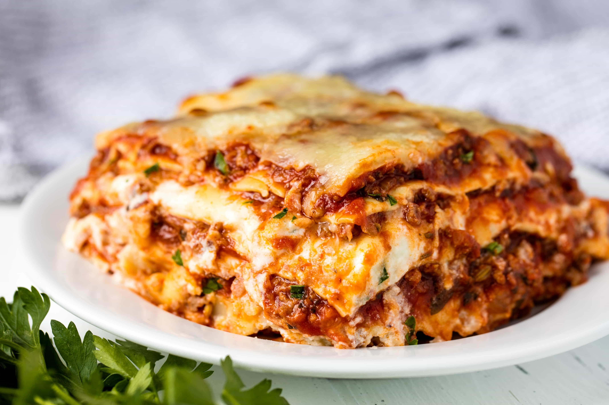

Lasagna Recipe
Home

Description
This classic lasagna recipe is made with an easy meat sauce as the base.
Layer the sauce with noodles and cheese, then bake until bubbly! This is great
for feeding a big family and freezes well, too.
Ingredients
- Lasagna noodles (regular or no-boil) are the base for layering.
- Ground beef, Italian sausage, or a combination of beef and pork.
- Optional additions: onions, garlic, carrots, and celery for flavor.
Steps
- Put pasta water on to boil: Put a large pot of salted water (1 tablespoon of salt for
every 2 quarts of water) on the stovetop on high heat.
- Brown the ground beef:
In a large skillet, heat 2 teaspoons of olive oil on medium-high heat.
Add the ground beef and cook until it is lightly browned on all sides
- Cook the bell pepper, onions, and garlic; add back the beef:
- Transfer the beef mixture to a medium-sized (3- to 4-quart) pot. Add the crushed tomatoes,
tomato sauce, and tomato paste to the pot.
- Boil and drain the lasagna noodles
- Assemble the Lasagna